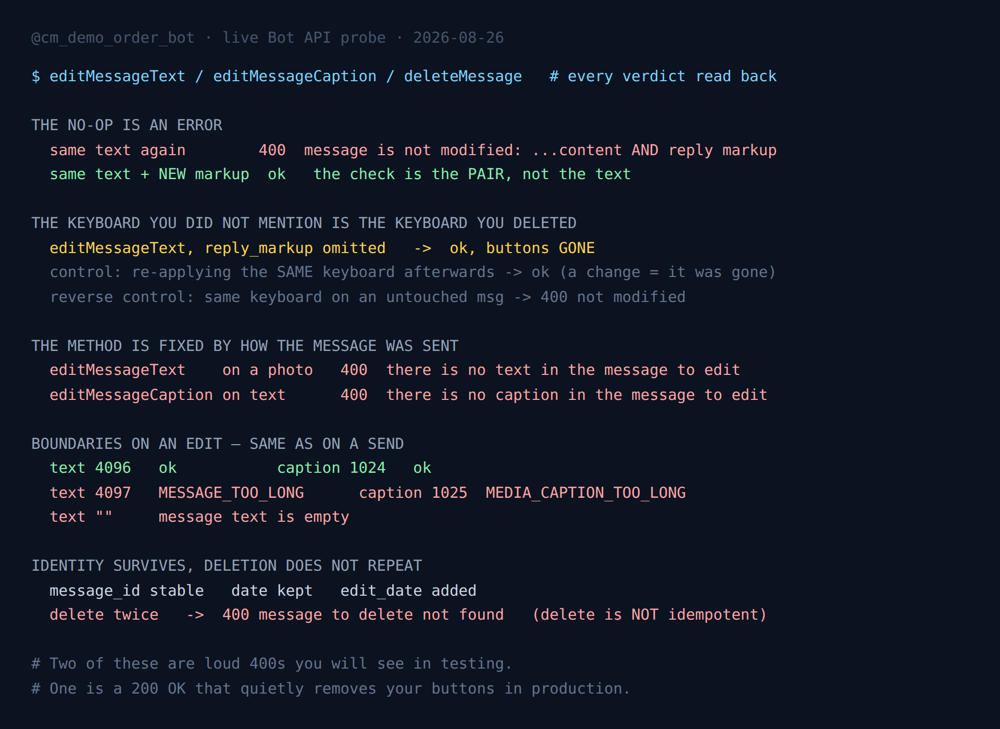

Telegram editMessageText: Your Keyboard Vanishes (Tested)
Most Bot API methods are interesting when they fail. Editing is the one where success is the problem.
A bot that edits its own messages — a live scoreboard, a progress bar, a menu that changes as you click through it — will at some point call editMessageText, get 200 OK, and quietly ship a message missing something the user was relying on. Nothing in the response says so.
So I measured the surface against a live throwaway bot: what an edit compares, what it replaces, which method applies to which message, the length boundaries, and what a delete does when you call it twice. Every verdict below was read back from the returned Message object rather than inferred from ok: true, and the finding this post is named after got an independent control run before I was willing to write it down.
- A no-op edit is an error, and the thing it compares is the content and the reply markup as a pair — not the text.
- An edit that omits
reply_markupdeletes the inline keyboard. 200 OK, buttons gone. - The edit method is fixed by how the message was sent, not by what it currently contains.
- The length limits on an edit are the send limits — 4096 for text, 1024 for a caption, and both refuse rather than truncate.
deleteMessageis not idempotent. The second call is a 400.

The setup
One demo bot with nothing in production behind it, one private chat, and a standard-library probe. Each phase sends a fresh message, acts on it, and reads the resulting Message object; every message created is deleted at the end, in a finally block so a crash mid-run still cleans up.
Transport errors are retried, so a network timeout can never be recorded as an API verdict — a timeout logged as a measurement is worse than no measurement at all. A Telegram-level error, meaning an HTTP 400 with a JSON body, is treated as data rather than as a failure. That distinction is the whole point of the exercise: the 400s are the documented, honest half of this API.
The no-op edit is an error, and it compares more than the text
Send a message, then edit it to exactly the text it already has:
400 Bad Request: message is not modified: specified new message content
and reply markup are exactly the same as a current content and reply
markup of the messageThe first half of that is widely known and widely worked around with a try/except that swallows it. The second half is the part worth reading, because the error string is unusually forthcoming: it names content and reply markup, together. That is the comparison.
Which predicts something testable. If Telegram compared the text alone, then re-sending the same text with a different keyboard would still be "not modified". It is not:
| Edit | Result |
|---|---|
| Same text, same markup | 400 message is not modified |
| Same text, new markup | 200 OK — markup stored |
| Changed text | 200 OK |
This matters for a very common bot shape: the message whose text is a fixed prompt and whose keyboard is the state — a quiz that says "Pick one" above four options, a paginated list with a static header, a settings panel. All of those update the markup while the text stays put, and none of them will ever hit "not modified", as long as the keyboard genuinely differs.
The inverse is where it bites. A bot that re-sends the same keyboard on every tick — a refresh loop, a poller that redraws unconditionally — hits 400 on every tick where nothing changed. That is not a bug to suppress; it is the API telling you that you are making a network call to change nothing.
The keyboard you did not mention is the keyboard you deleted
This is the finding the post is named after, and the only one here that will not show up in your tests.
Take a message that has an inline keyboard. Edit only its text, the way you would naturally write it — chat id, message id, new text, done:
editMessageText(chat_id=..., message_id=..., text="updated")
-> 200 OK
-> reply_markup in the returned Message: absentThe buttons are gone. The call succeeded. Nothing warned you.
The mental model that produces this bug is that an edit is a patch — you name the field you want changed and the rest is left alone. It is not. The editMessageText documentation lists reply_markup as an ordinary optional parameter, and an omitted optional parameter reads naturally as "leave it". What actually happens is that the edit replaces content and markup as a unit, and an absent keyboard is a keyboard set to nothing.
I did not want to publish that on the strength of one absent field in one response, because "the response object didn't include it" is weaker evidence than it looks — APIs omit empty fields for all sorts of reasons. So I ran a discriminator.
After the markup-omitted edit, re-apply the same keyboard the message originally had. There are only two possible outcomes, and they disagree:
- If the keyboard is still on the message, re-applying it changes nothing →
400 message is not modified. - If the keyboard was removed, re-applying it is a change →
200 OK.
Result: 200 OK. The keyboard was genuinely gone.
And because a discriminator that always returns OK would prove nothing at all, the same call went to a second message that had been left untouched — same keyboard, never edited. That one returned 400 message is not modified, exactly as it must if the test is measuring what I claim. Both halves agree: the markup-omitted edit removed the keyboard.
The practical rule: if a message has an inline keyboard and you are editing its text, send the keyboard again in the same call. Not because the API is broken — because "edit" here means "replace", and every field you leave out is a field you cleared.
The production failure is quiet and delayed. The user sees the new text arrive, correctly, and the buttons they were about to press are simply gone. There is no error in your logs to correlate it with, because there was no error — the same class of problem as an oversized inline keyboard being silently truncated instead of rejected.
Removing a keyboard on purpose
The deliberate version is editMessageReplyMarkup with an empty inline_keyboard. In my run it returned message is not modified — because the previous phase had already removed the keyboard, so an empty markup was no change at all. That error is a consequence of the finding above, not a separate rule. On a message that still has its buttons, the same call clears them and returns 200.
The method is fixed by how the message was sent
A photo with a caption and a text message look similar in a chat and are not interchangeable to the API:
| Call | Target | Result |
|---|---|---|
editMessageText | photo message | 400 there is no text in the message to edit |
editMessageCaption | photo message | 200 OK |
editMessageCaption | text message | 400 there is no caption in the message to edit |
The symmetry is the useful part. Neither method degrades into the other, and the error text tells you precisely which assumption you got wrong. Whether a message carries text or a caption was decided at send time and an edit cannot change it.
Generic code is where this surfaces — a helper handed a stored message_id that does not track whether the id came from sendMessage or sendPhoto. If you keep message ids in a database in order to edit them later, keep the message type next to the id. The API will not infer it for you.
The boundaries on an edit are the boundaries on a send
No surprises here, which is itself worth recording — an edit does not get a different budget:
| Edit to | Result | Stored |
|---|---|---|
| Text, 4096 chars | 200 OK | 4096 |
| Text, 4097 chars | 400 MESSAGE_TOO_LONG | unchanged |
| Text, empty string | 400 message text is empty | unchanged |
| Caption, 1024 chars | 200 OK | 1024 |
| Caption, 1025 chars | 400 MEDIA_CAPTION_TOO_LONG | unchanged |
Every one refuses rather than truncating, and the previous content survives — the same all-or-nothing behaviour the 4096-character limit shows on a send. A bot that grows a message by appending, such as a running log, therefore does not degrade at the ceiling: it stops updating, at full length, until someone notices.
One detail for anyone matching on error strings: the style is inconsistent. MESSAGE_TOO_LONG and MEDIA_CAPTION_TOO_LONG are uppercase constants, while message text is empty is lowercase prose. Both arrive in the same description field. Match the substring you actually saw; do not assume a house style exists.
What survives an edit
The identity of the message is stable, which is the reassuring result of the set:
message_idis unchanged — a stored reference stays valid across any number of edits.- The original
dateis preserved. An edit does not re-stamp the message as new. - An
edit_datefield appears on the returned object. That is what a client uses to show the "edited" marker, and it is a reliable way for your own code to tell an edited message from a fresh one.
Deleting twice is an error
deleteMessage returns true, and then:
| Call | Result |
|---|---|
| Delete | 200 OK, result: true |
| Delete the same message again | 400 message to delete not found |
| Edit a deleted message | 400 message to edit not found |
So deletion is not idempotent, which is an awkward property for cleanup code. The realistic path to hitting it is a retry, not a double-click: your delete succeeds on Telegram's side, the response is lost to a timeout, the retry fires the same call, and the second attempt returns 400. A wrapper that treats any non-2xx as a failure will report a cleanup that worked as an error — the retry manufactures a problem out of a success.
Treat message to delete not found as a synonym for "already gone" in cleanup paths. The deleteMessage reference is worth reading for its other constraints too — the ones about message age and permissions, which is where the next section starts.
What I did not measure
There is a widely repeated claim that a bot cannot edit or delete a message older than 48 hours. I cannot confirm or deny it from this run, and I am not going to repeat it as though I had.
The reason is structural rather than an oversight: a single run cannot produce a 48-hour-old message. Reaching backwards instead — editing and deleting very low message ids in the same chat — returns message to edit not found and message to delete not found, which is the absence error, not an age error. Those ids never existed there, so the test measured nothing about age.
What it does establish is that "not found" means "no such message" rather than "too old to touch". If you are handling the age rule, do not key on that string — it answers a different question. The clean measurement needs a message left in place and re-probed two days later.
What to change in your code
- Re-send
reply_markupon every text edit of a message that has buttons. The single highest-value line in this post. Omitting it clears them, silently. - Store the message type alongside the message id if you plan to edit later. Text and caption are not interchangeable and the API will not guess.
- Do not blanket-suppress
message is not modified. It is a signal that a redraw path is firing when nothing changed — on a rate-limited API, that is wasted budget. It is also harmless to hit deliberately, so it makes a cheap change-detector. - Treat "message to delete not found" as success in cleanup and retry paths.
- Match error substrings, not error styles. Some are uppercase constants, some are prose.
If you work through a library rather than raw HTTP, the same rules apply underneath — wrappers such as python-telegram-bot's Bot class pass reply_markup straight through, so an omitted argument is an omitted parameter on the wire, with exactly the effect above.
Telegram in Production
The measured limits, the failure modes and the boilerplate that survives them: escaping, rate limits, update queues and webhook handling, in one pack.
Get the pack — $19FAQ
Why does Telegram say "message is not modified"?
An edit that changes nothing is an error rather than a no-op. The error text names both halves of the comparison — content and reply markup — and Telegram compares the pair. The same text with a different keyboard succeeds; the same text with the same keyboard is a 400.
Does editMessageText remove the inline keyboard?
Yes, if you omit reply_markup. An edit replaces content and markup together rather than patching the text, so an absent keyboard means no keyboard. The call returns 200 OK and the buttons are gone. Send the keyboard again with the edit to keep it.
Can I use editMessageText on a photo?
No — it returns there is no text in the message to edit. Use editMessageCaption. The mirror holds as well: editMessageCaption on a plain text message is refused the same way. Which method applies is decided by how the message was sent.
What is the maximum length when editing a message?
The send limits, unchanged: 4096 characters of text (4097 gives MESSAGE_TOO_LONG) and 1024 characters of caption (1025 gives MEDIA_CAPTION_TOO_LONG). Both refuse rather than truncate, and an empty string is rejected outright.
Does editing change the message_id?
No. The message_id and the original date both survive; Telegram adds an edit_date field. Stored references remain valid across any number of edits.
Is deleteMessage idempotent?
No. The second delete returns message to delete not found. This is most often reached by a retry after a lost response, so cleanup code should treat that error as "already gone" rather than as a failure.
Can a bot edit a message older than 48 hours?
I did not measure it — a single run cannot age a message two days. Editing a non-existent id returns message to edit not found, which is the absence error and says nothing about age. Do not key age handling on that string.
More measurements from the same bot: the inline keyboard caps that truncate instead of erroring, the command list that refuses 101 entries and silently rewrites two things, and which MarkdownV2 characters break a message and which delete it — the last one matters here, because an edit re-parses your entities from scratch.
← Back to Blog